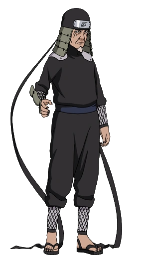
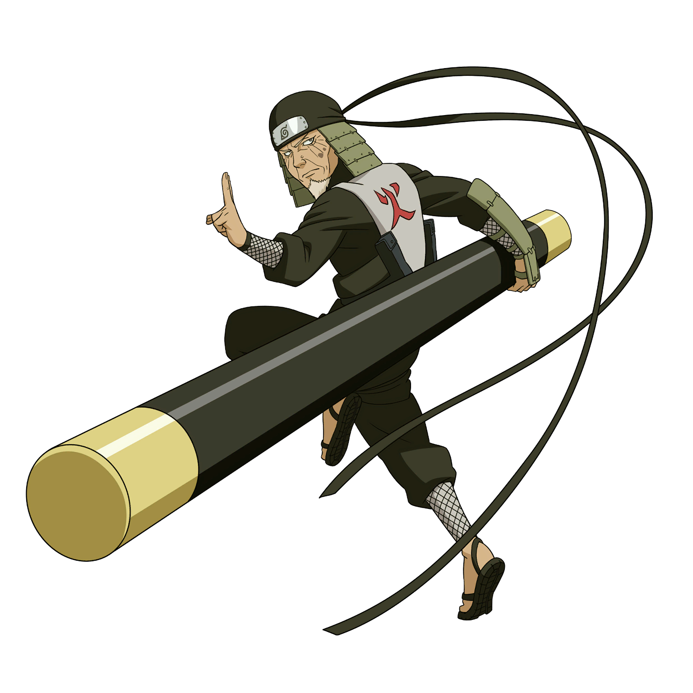

Informações sobre Hiruzen Sarutobi
Perfil
- Nome Completo: 猿飛ヒルゼン (Sarutobi Hiruzen)
- Idade: Sua idade exata não é mencionada.
- Altura: Não especificada.
- Peso: Não especificado.
Afiliações
- Hiruzen serviu como um dos Hokages de Konohagakure, a Vila Oculta da Folha.
- Também foi membro do lendário Time Hiruzen, que consistia nele mesmo, Homura Mitokado e Koharu Utatane.

Habilidades Especiais
- Hiruzen era conhecido como o "Deus Shinobi" por sua incrível habilidade em dominar diversas técnicas ninjas, incluindo as de todos os cinco elementos básicos e várias técnicas proibidas.
- Também era mestre em técnicas de selamento.
Objetivos
Como líder de Konohagakure, Hiruzen tinha o objetivo de proteger sua vila e garantir a segurança de seus habitantes. Ele também se esforçava para manter a paz entre as aldeias ninja.